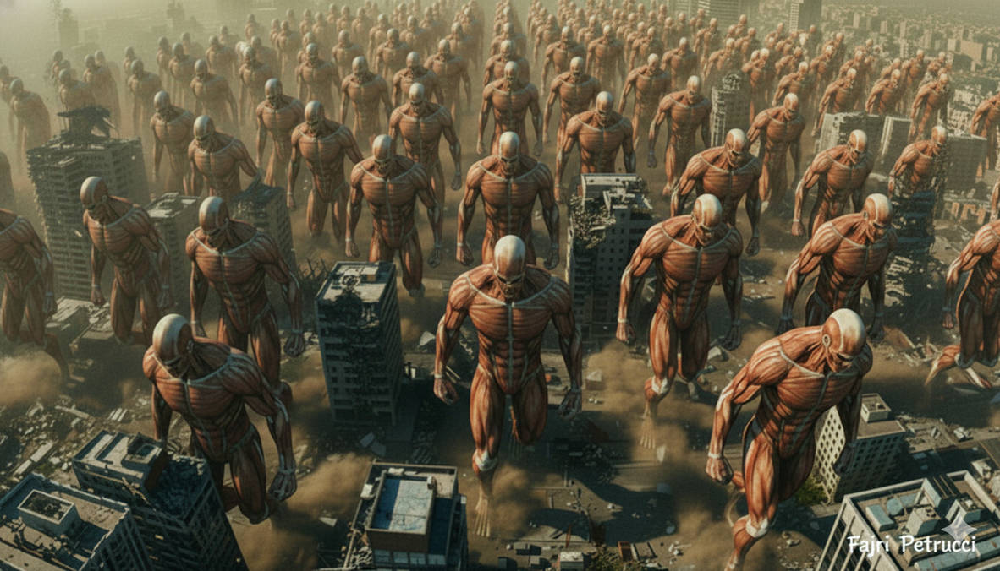
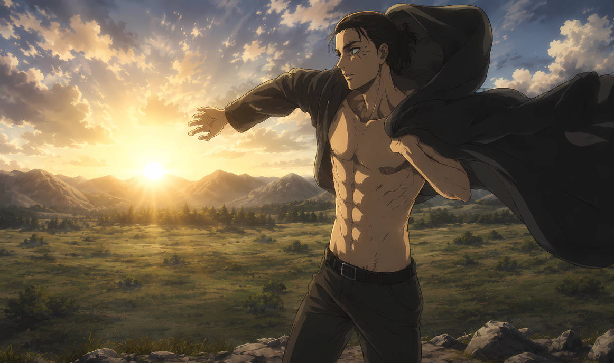
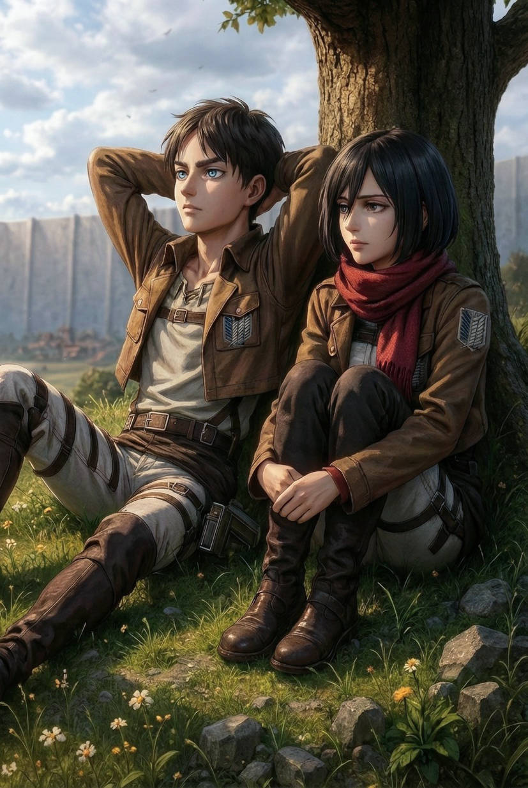
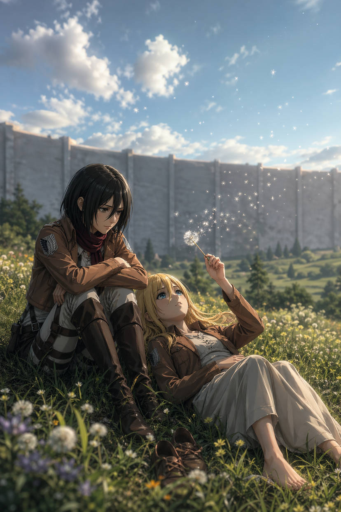

Poucos animes causaram tanta discussão quanto o final de "Attack on Titan".
Quando o mangá terminou, parte dos fãs considerou o encerramento genial. Outra parte acreditou que Hajime Isayama destruiu o protagonista.
Mas talvez o maior problema seja que muita gente interpretou o final apenas como "Eren virou vilão".
E isso está longe de resumir o verdadeiro significado da história.
"Attack on Titan nunca foi sobre heróis salvando o mundo. Sempre foi sobre pessoas presas em ciclos impossíveis."
Eren Nunca Foi Livre
Durante praticamente toda a série, Eren acreditava lutar pela liberdade.
Mas o plot twist mais cruel do anime é justamente descobrir que ele talvez fosse a pessoa menos livre de todas.
Após obter o Titã Fundador, Eren passa a enxergar passado, presente e futuro simultaneamente.
Isso significa que ele já conhecia partes do próprio destino.
🧠 O verdadeiro problema:
- Eren via memórias do futuro
- Ele sabia que o Rumbling aconteceria
- Sabia que seus amigos tentariam matá-lo
- Sabia que milhões morreriam
- E mesmo assim não conseguiu impedir
Isso muda completamente a percepção do personagem.
Muitos fãs interpretaram Eren como alguém que escolheu genocídio por vontade própria.
Mas a série sugere algo muito mais perturbador: Eren estava preso em um ciclo temporal inevitável.
O Rumbling Era Realmente Necessário?


O Rumbling é provavelmente um dos eventos mais brutais da história dos animes.
Milhões de pessoas foram esmagadas pelos Titãs Colossais.
Eren destruiu cerca de 80% da humanidade.
O anime deixa claro que aquilo foi um massacre.
Mas existe um detalhe importante: o mundo inteiro já planejava exterminar Paradis.
Para o restante do planeta, os eldianos eram monstros.
Ou seja: Paradis estava condenada cedo ou tarde.
⚔️ O dilema impossível:
- Se Eren não atacasse, Paradis seria destruída
- Se atacasse, se tornaria o maior assassino da história
- Não existia solução limpa
- O ódio entre povos já era irreversível
É exatamente isso que torna o final tão desconfortável.
Attack on Titan não entrega uma resposta moral simples.
A obra obriga o espectador a encarar um mundo onde todos acreditam estar certos.
Mikasa Foi a Pessoa Mais Importante da Série


Durante anos, muitos fãs acreditaram que Mikasa era apenas uma personagem obcecada por Eren.
Mas o final revela que ela era o verdadeiro centro emocional da história.
Ymir Fritz observava Mikasa há milhares de anos.
Porque Mikasa precisava fazer algo que Ymir nunca conseguiu: abandonar alguém que amava.
Ymir permaneceu escravizada emocionalmente ao Rei Fritz, mesmo após séculos de sofrimento.
Mikasa quebra esse ciclo quando decide matar Eren.
"O verdadeiro fim dos Titãs não aconteceu com Eren. Aconteceu quando Mikasa finalmente conseguiu deixá-lo partir."
O Final Mostra Que Nada Mudou?
Essa é uma das interpretações mais pesadas do anime.
Mesmo após tudo, a guerra continua existindo.
Nas cenas finais, Paradis volta a se militarizar.
Anos depois, a cidade parece ser destruída novamente.
Isso significa que Eren falhou?
Talvez parcialmente.
Mas o anime nunca prometeu paz eterna.
O verdadeiro objetivo de Eren era dar tempo para seus amigos viverem livres.
E nisso ele conseguiu.
🔥 O significado mais sombrio do final:
- O ódio nunca desaparece completamente
- A humanidade repete ciclos de guerra
- Não existem heróis perfeitos
- Liberdade sempre tem um preço
A Cena Final da Árvore Mudou Tudo
Nos momentos finais, vemos uma árvore gigantesca muito parecida com aquela onde Ymir encontrou o poder dos Titãs.
E então surge uma criança caminhando em direção a ela.
A implicação é assustadora: o ciclo pode começar novamente.
Isso transforma Attack on Titan em uma história circular.
Não existe final feliz definitivo.
Apenas pausas temporárias entre guerras.
"Talvez o verdadeiro inimigo nunca tenham sido os Titãs... mas a própria natureza humana."
Então o Final Foi Ruim?
O final de Attack on Titan não foi feito para agradar.
Ele foi feito para incomodar.
E talvez seja exatamente por isso que continua sendo tão discutido.
Muitos fãs esperavam um encerramento épico de vingança ou vitória.
Mas Isayama entregou algo muito mais pessimista: uma história sobre ódio, trauma e ciclos impossíveis de quebrar.
E olhando por esse lado... talvez o final tenha sido muito mais coerente do que parece.
Artigos Relacionados